Dobór technologii projektowej
Zaawansowane metody programowania
wykład 1 z 15

mgr inż. Krzysztof Rewak
Zakład Informatyki, Wydział Nauk Technicznych i Ekonomicznych
Collegium Witelona Uczelnia Państwowa
Blumilk sp. z o.o.
Agenda
- Ramowy plan semestru
- Warunki zaliczenia kursu
- Dobór technologii projektowej
- Podsumowanie
Planowany rozkład jazdy
- Dobór technologii projektowej
- Zasady SOLID
- KISS, DRY, YAGNI, GRASP i inne
- 12 factor
- Czysty kod, część I
- Czysty kod, część II
- Czysty kod, część III
- Onboarding projektowy
- Praktyczny polimorfizm
- Wzorce projektowe: kreacyjne
- Wzorce projektowe: strukturalne
- Wzorce projektowe: operacyjne
- Wzorce projektowe: antywzorce
- Programowanie ekstremalne
- Praktyczne code review
Formy zajęć
wykład to teoretyczna część kursu; w trakcie 15 spotkań zostaną
przedstawione najważniejsze zagadnienia związane z zarządzaniem projektami informatycznymi
laboratorium to praktyczna część kursu; w trakcie semestru studenci będą
pracować zespołowo nad projektem i budową systemu informatycznego
Wykład kończy się egzaminem podsumowującym wiedzę przyswojoną w trakcie semestru. Egzamin - w zależności
od liczby przystępujących osób - odbędzie się w formie pisemnej lub ustnej. Zagadnienia do egzaminu
zostaną przedstawione na ostatnim wykładzie.
Ponadto na wykładach:
a) będzie sprawdzana lista obecności na zasadzie białej listy
b) będzie mierzona (pozytywna i negatywna) aktywność studentów.
Zachęcam do uczęszczania na wykłady.
Ocena końcowa
Ω = 0.3 W + 0.7 L
Ocena niedostateczna z jednej formy rzutuje na ocenę niedostateczną za całość!
Bonusy
Osoby, które otrzymały z projektu ocenę bardzo dobrą, zostaną zwolnione z
kolokwium z przepisaną oceną.
Wysoka frekwencja oraz aktywność na wykładach mogą rzutować na obniżenie progu przepisywanej oceny do
dobrej plus dla indywidualnych studentów.
W czym to napisać?
Wybór technologii projektowej to jedna z najważniejszych decyzji, które trzeba podjąć na samym początku projektu.
Często ta decyzja "podejmie się sama" - chociażby biorąc pod uwagę doświadczenie zespołu, specjalizację firmy czy wymagania klienta. Zespół ekspertów w dotnecie raczej sam z siebie nie zaproponuje żeby nowy projekt pisać w Springu. Prędzej właśnie spróbuje przekonać klienta, że jego technologia jest "lepsza".
Młotki i gwoździe
Znane w branży powiedzenie mówi, że właściciel młotka wszystko widzi jako gwoździe. Dlatego też ten dotnetowiec będzie chciał wszystko rozwiązywać microsoftowymi narzędziami.
Teoretycznie większość programów da się napisać w każdym języku programowania. Poza aspektami typowo projektowymi, istnieją również obiektywne przesłanki mówiące, że pewne technologie są w niektórych przypadkach lepsze niż inne.
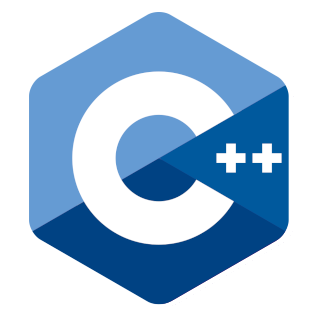

 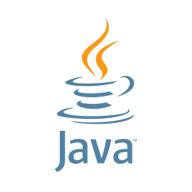
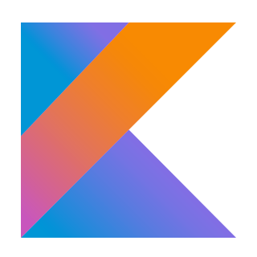
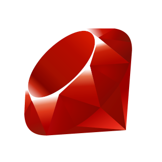
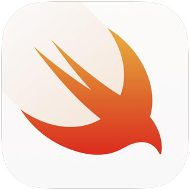
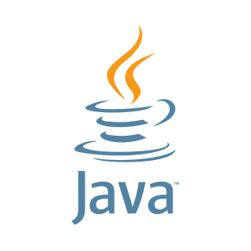
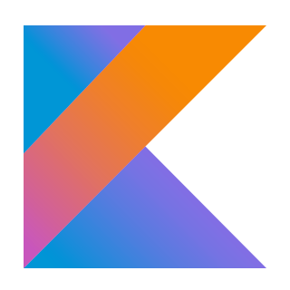
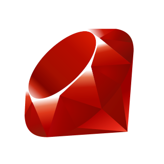
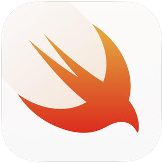
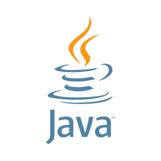
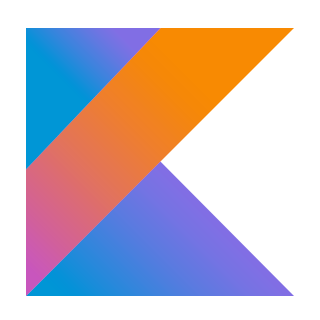
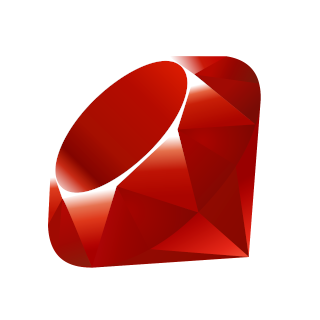
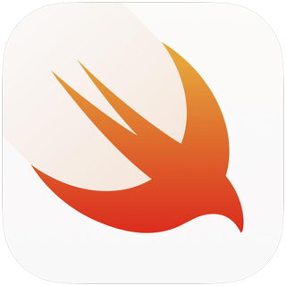
i inne
Backend / API
Backend webowy może być pisany praktycznie w każdym języku, ale niektóre są lepsze od innych*, a jeszcze inne mają bardziej wyspecjalizowane narzędzia (frameworki) niż pozostałe. I to dzięki modularności, elastyczności i gotowym komponentom są one tak popularne.
Oczywiście, że można pisać REST-owy backend połączony z bazą danych i systemem cache w C++... W wielu przypadkach prawdopodobnie będzie to tzw. overengineering i porywanie się z motyką na słońce. Niemniej jednak znajdą się pewnie i takie miejsca, gdzie będzie to akurat wskazane.
Frontend webowy
Na frontendzie webowym - w kontekście aplikacji, a nie stylowania - mamy JavaScript, TypeScript i długo, długo nic.
Coraz popularniejsze robi się WebAssembly czy też komponentowe frameworki takie jak Livewire czy Blazor, ale dominacji javascriptowych technologii długo jeszcze nic nie przebije.
Aplikacje mobilne
Aplikacje mobline może podzielić z grubsza na trzy typy: natywne, międzyplatformowe oraz "udające" aplikacje.
Natywne są pisane na konkretną platformę (Java/Kotlin na Androidzie, Swift na iOS), międzyplatformowe można budować na obie platformy (Dart/Flutter, Xamarin, TypeScript/React Native), a te ostatnie to po prostu strony internetowe opakowane w kontener aplikacji mobilnej. Każde z tych rozwiązań ma oczywiście swoje plusy i minusy.
Programy desktopowe
Programy desktopowe świętowały już dni swojej popularności, ale w wielu miejscach można je wciąż spotkać. Dawniej były samoistnymi systemami, a obecnie często łączą się do zewnętrznego API lub bazy danych, aby działać "w chmurze".
Highlights
- trzeba wiedzieć jakie technologie są odpowiednie do jakich zadań
- zamykanie się na jeden stack technologiczny w życiu to raczej słaba strategia
- w teorii można napisać aplikację mobilną w PHP... ale po co?
- warto znać różnice między językami i frameworkami, aby móc znajdować najlepsze rozwiązania w swojej technologii
Źródła i do dalszego poczytania